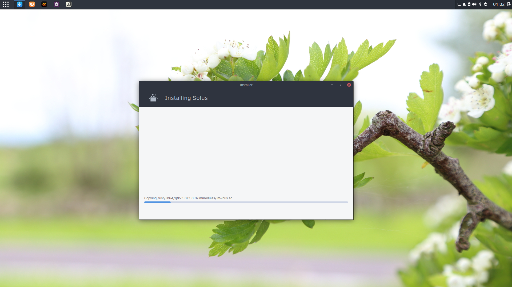

Back to Solus
Well, that was faster than I expected. This past weekend, I wiped the Fedora installation on my main computer, and replaced it with Solus. My Fedora install broke, and I needed to use a Fedora Live CD to fix it. I thought that if I had to use a live CD to fix the issue, I might as well just do a clean install. With the idea of a clean install in my head... I thought (possibly influenced by my recent motivation to play with Go), that I might as well do the clean install with Solus...
Nvidia Issues
Basically, what I think happened was that my Nvidia drivers got messed up during an update. When I rebooted my computer, my screens were black. This happened no matter which kernel I booted into from Grub. I assumed it was a graphics problem and preceded to switch to another tty to login and fix the problem. I was able to get to a CLI login screen (with the normal user: prompt) and tried login in. However, after typing in my user name and hitting enter, instead of being promoted for a password, I received an "Error Logging In" message. So, I tried the same thing with the root user account. Same thing. After typing in a user name, it yelled at me. There was no way to log in.
I jumped into the IRC chat and started asking around for advice. As always, everyone was very helpful and tried to help me troubleshoot. They shared my bewilderment. We came to the conclusion that it must of been something with the Nvidia drivers. I was told that it is common to have issues when installing the drivers from Nvidia's web site instead of the RPM Fusion Repos (I intended to install from the RPM fusion repos, but I went to the nvidia site to find out what version to should use... and then just downloaded it from there. My bad :P).
Anyway, I quickly realized that at the very least, I would have to boot up and log into a Live CD to fix the problem. As stated in the intro paragraph, while waiting for the ISO image to download I thought that if I have to load up the CD, I might as well just do a clean Fedora 26 install. A couple minutes later as I was booting up the Live CD, I through that as long as I was reinstalling my OS... l should consider installing... Solus.
Installed Solus

With the Fedora live environment all booted and ready, I started downloading the latest Solus ISO (Budgie) on my other laptop. Once the ISO image was mounted to a drive, I booted it up and started installing Solus. After the install, I immediately updated because I knew there have been a TON of updates since the last ISO snapshot (mid-April). When I rebooted, I absolutely loved what I saw. It is amazing how much Solus and Budgie have improved, even during my short distro-hopping vacation.
Looking at my post history, it may appear as though I used Fedora for a few days, became fed up with it, and came running back to Solus. That is not entirely true. The reality is that I sat on writing my Fedora post for a long time. I used Fedora for about a month, and it was generally a great experience. If it didn't break, I probably would have stayed for a bit longer. When considering a new install though, I realized that I had missed Solus.
As of now, my plan is to keep using Solus, at least on my main computer. I am also hoping to get more involved with the project, and start packing up some software again. Maybe I can even help with some debugging and development. We shall see...